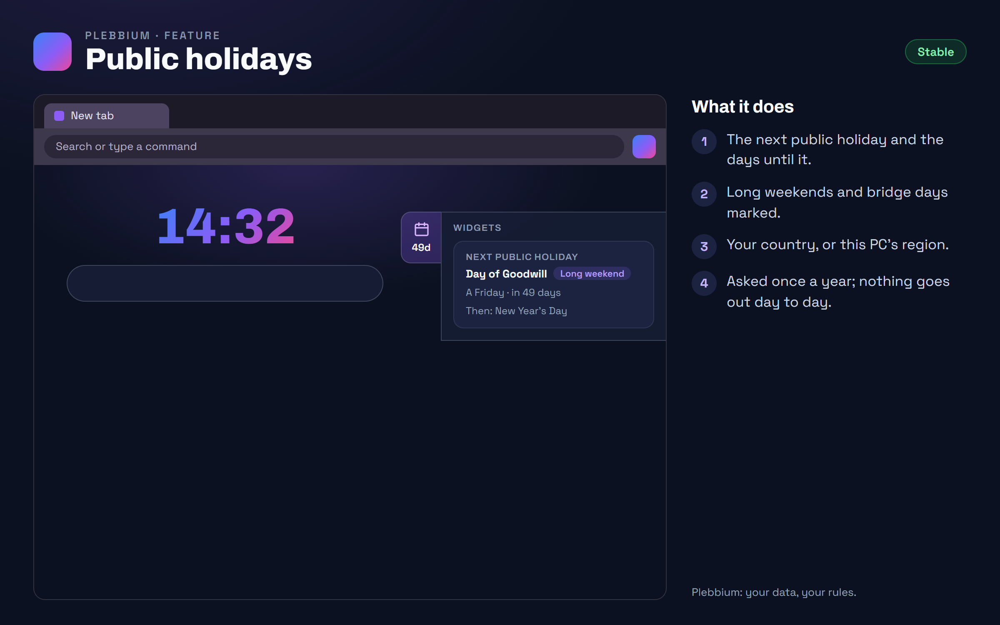

All features › Shipped › Public holidays
Public holidays
Stablesince features 0.13.1A card in the new tab's widgets strip with the next public holiday: its name, the date and how many days until it, long weekends marked, and the one after. South Africa to start, or any of about 200 countries.

How to use it
- Look: rest on the new tab's right edge, or click it.
- Another country: Plebbium settings › Widgets › Holidays for.
- Off: Plebbium settings › Widgets › Show the next public holiday.
When it arrived
Features 0.13.0Beta 7 Nov 2026 · Stable 13 Nov 2026 (3620)
Public holidays in the widgets strip.
Why it works this way
Asked once a year
The holiday list comes from Nager.Date, free and without an account, once a year per country; nothing is asked day to day.
The country's own holidays
Only national holidays are shown, not one province's or state's.